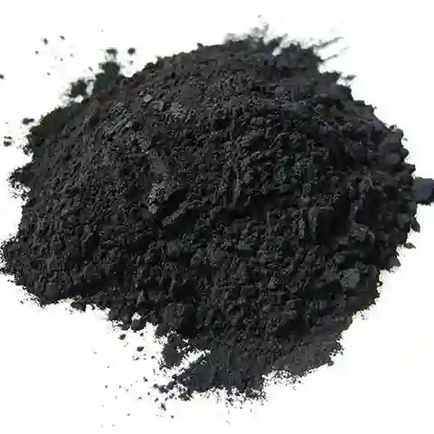

Buy Bulk Wholesale Activated Carbon From Indonesia
HS Code: 380210 Activated carbon
Activated carbon, made from natural sources like coconut shell activated carbon, is valued for its high adsorption.
Activated Carbon Specifications:
1. Vapor Phase Series (IKI VPF)
This series is specifically designed for vapor phase applications, such as air filtration, odor control, and gas purification.VPF activated carbon comes in various granule sizes to support adsorption efficiency for different needs, ranging from solvent recovery to industrial and household air filtration.
| Product Code | Granule Size | Quality | Applications |
|---|---|---|---|
| IKI VPF 48 | 4x8 USS mesh | 40% – 65% | Solvent Recovery |
| IKI VPF 612 | 6x12 USS mesh | CTC min. | De-odorization, Protective Breathing Equipment, Air Conditioning Filters, Cooker Hoods, Exhaust Air & Gas Purification |
| IKI VPF 2050 | 20x50 USS mesh | 50% – 60% | Car Cannisters |
| IKI VPF 3060 | 30x60 USS mesh | CTC min. | Cigarette Filter Tips |
| IKI VPF 3070 | 30x70 USS mesh |
2. Gold Recovery Series (IKI GRC)
The GRC series is widely used in the mining industry for the recovery of gold and other precious metals.With its high adsorption capacity, this product helps improve the efficiency of extracting valuable metals from cyanide solutions or other refining methods.
| Product Code | Granule Size | Quality | Applications |
|---|---|---|---|
| IKI 612 GRC | 6x12 USS mesh | 50% – 60% | Recovery of Gold & Other Precious Metals |
| IKI 816 GRC | 8x16 USS mesh | CTC min. |
3. Liquid Phase Series (IKI LPF)
The LPF series is formulated for liquid phase applications, such as drinking water treatment, wastewater treatment, and the beverage industry. Products in this series are effective for dechlorination, decolorization, decaffeination, and a wide range of other liquid purification needs.| Product Code | Granule Size | Quality | Applications |
|---|---|---|---|
| IKI LPF 814 | 8x14 USS mesh | 40% – 60% | Potable Water Treatment |
| IKI LPF 816 | 8x16 USS mesh | CTC min. | Waste Water/Effluent Treatment |
| IKI LPF 830 | 8x30 USS mesh | Dechlorination | |
| IKI LPF 1030 | 10x30 USS mesh | Soft Drinks & Alcoholic Beverages Decolorization | |
| IKI LPF 1230 | 12x30 USS mesh | ||
| IKI LPF 1240 | 12x40 USS mesh | Decaffeination | |
| IKI LPF 2050 | 20x50 USS mesh | Catalyst Support | |
| IKI LPF 3060 | 30x60 USS mesh | High Pressure Filtration Units | |
| IKI LPF 3070 | 30x70 USS mesh |
4. Special Treatment Series (IKI LPF Special)
Special activated carbon products that have undergone additional treatments, such as washing with demineralized water or acid washing.This series is intended for applications requiring very high cleanliness, neutral pH, low ash content, or powdered form for decolorization.
| Product Code | Treatment / Form | Quality | Applications |
|---|---|---|---|
| IKI LPF S | Water washed with demineralized water | Applications requiring very clean product | |
| IKI LPF SA | Acid washing with Nitric/Sulphuric acid | Applications requiring neutral pH or low ash content | |
| IKI LPF PP | Powder (-200 mesh) | Iodine 900 – 1200 min. | Water Treatment Decolorization |
Activated Carbon Uses :
Water Purification :
Activated carbon is widely used in drinking water and wastewater treatment. It removes chlorine, bad odors, organic pollutants, and other impurities, improving water quality for household and industrial use.Air and Gas Filtration:
Used in air purifiers, industrial exhaust systems, and gas masks, activated carbon traps volatile organic compounds (VOCs), odors, and toxic gases, making the air safer to breathe.Gold Recovery:
In the mining industry, activated carbon plays a key role in gold extraction through processes like CIP, CIL, and CIC. Its high adsorption capacity allows efficient recovery of gold from cyanide solutions.Food and Beverage Processing:
Activated carbon is used to decolorize, purify, and remove unwanted tastes or odors from food and beverages such as sugar, wine, and juices.Medical and Pharmaceutical:
Activated carbon is used in emergency treatments for poisoning and drug overdoses, as well as in pharmaceutical manufacturing to purify raw ingredients and products.Chemical Processing:
In chemical industries, activated carbon filters impurities from raw materials, recovers solvents, and acts as a catalyst carrier in various reactions.Cosmetics and Personal Care:
Commonly found in facial masks, toothpaste, and soaps, activated carbon helps absorb toxins, oils, and impurities from the skin, promoting cleanliness and clarity.Indonesia Activated Carbon for Sale
Activated Carbon, produced from high-quality coconut shell charcoal, is one of Indonesia’s most important agro-based industrial materials.Known for its superior adsorption capacity, hardness, and purity, Indonesian activated carbon is trusted worldwide across diverse industries.
With its high surface area, microporous structure, and customizable granule sizes, activated carbon from Indonesia is widely applied in water and air purification, gold recovery, food & beverage processing, pharmaceuticals, and environmental protection.
Key Features & Benefits
-
Superior Adsorption Capacity:
Effectively removes impurities, odors, toxins, and contaminants from liquids and gases. -
High Hardness & Purity:
Made from premium coconut shells, ensuring long service life, low dust, and stable performance. -
Versatile Applications:
Widely used in water treatment, air purification, solvent recovery, gold extraction, food & beverage decolorization, and pharmaceutical industries. -
Environmentally Friendly:
Produced from renewable coconut shells, making it a sustainable and eco-conscious solution. -
Consistent Quality:
Manufactured under strict international standards (ISO, HACCP, Halal), ensuring reliability for global markets. -
Reliable Supply:
Backed by Indonesia’s abundant coconut resources and advanced processing facilities, enabling continuous and large-scale availability worldwide.
One Wholesale Indo
Many global businesses often face significant challenges when trying to access high-quality products from Indonesia.Complex supply chains, lack of transparency, inconsistent quality standards, and logistical uncertainties frequently create barriers for international buyers.
One Wholesale Indo was established to simplify this process. By connecting SMEs and buyers worldwide directly with reliable Indonesian products.
We ensure that access to Indonesia’s finest products becomes quicker, safer, and transparent. Provide tailored sourcing that complies with regulations in the destination country
With a strong commitment to quality control, transparent sourcing, and secure international trade practices, One Wholesale Indo provides a trusted platform where businesses can confidently source premium Indonesian products
Get Top-Quality Activated Carbon from Indonesia
Are you looking for a reliable supply of high quality Activated Carbon for your needs, whether in small or large quantities and across various types?You've come to the right place! Contact us, and we will be happy to help you find the solution that suits your needs! Click the displayed WhatsApp button.